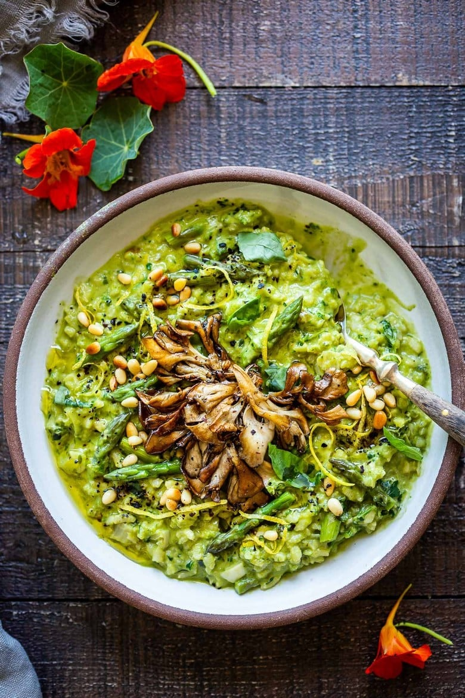

Vegan Dishes
-
Lentil Bolognese

Description Rich and robust, this plant-based Lentil Bolognese is hearty, “meaty” and full of depth of flavor. Toss it with your favorite pasta, or spoon it over creamy polenta- either way, this simple nourishing vegan meal is one the whole family will enjoy.
Ingredients
- tablespoons olive oil
- 1 large onion, diced
- 1 1/2 cup carrots, small diced
- 1 1/2 cups celery diced
- 4–6 cloves garlic, rough chopped
- 1 1/2 teaspoon salt
- 1/2 teaspoon pepper
- 1/4 teaspoon chili flakes- optional
- 1 tablespoon fresh oregano or thyme (or 2 teaspoons dried Italian herbs)
- 1/3 cup tomato paste
- Generous splash red wine (optional) 1/4 cup-ish
Instructions
Heat oil in a large pot or dutch oven over medium-high heat. Add the onion and saute for 2-3 minutes stirring until fragrant. Lower heat to medium, then add the carrots, celery, garlic, salt, pepper, chili flakes, and herbs. Saute 7-8 minutes, stirring. Add the tomato paste, browning it just a bit in the pan (this will deepen the flavor), then deglaze with wine if you want, scraping up any brown bits. Once most of the wine has cooked off add the tomatoes and their juices, cook them down for just a few minutes. Add the lentils, veggie stock and hemp seeds or walnuts.
Bring to a boil, cover tightly, lower heat to low, and simmer gently 20-25 minutes, or until the lentils are tender. Uncover. Continue cooking uncovered until most of the liquid has cooked off. Stir in the balsamic vinegar, taste, and adjust salt, pepper, vinegar and chili flakes to your liking. Keep in mind, you want this just slightly salty if tossing with pasta. Serve this tossed with your favorite pasta or serve it over this creamy polenta or this Instant Pot Polenta. Sprinkle with optional pecorino cheese… or try this Vegan Cheesy Sprinkle! -
Asparagus Risotto
Asparagus Risotto Description
Lemony Asparagus Risotto with leeks and basil-light and creamy with vibrant color and flavor, perfect for spring! A tasty vegetarian meal, or beautiful base for fish, seafood or mushrooms! Makes 5 cups (Serves 2-3 as a main dish, or 4-5 as a side dish) Ingredients Units Scale- 1 bunch asparagus
- 1 large leek (or white onion, diced)
- 4 tablespoons olive oil, divided
- 4 garlic cloves, rough chopped
- 1 cup arborio rice
- 1/4 cup white wine, optional- or skip it
- 3 1/2– 4 cups hot veggie broth (or use hot water with 2 teaspoons veggie bouilulon)
- 1/2 cup basil leaves (or sub part Parsley)
- 1 lemon, zest and some juice to taste
- 1/2 teaspoon salt, more to taste
- 1/4 teaspoon pepper
Instructions
Read the directions all the way through so you get a general idea of things here. üôÇ
Bring a small pot of water to boil on the stove to blanch asparagus. Prep the asparagus: Cut the fibrous ends off the asparagus and discard. (You can tell where this is by breaking an end off with your fingers, usually about an inch from bottom- and using this as a guide, cut the rest to match. Toss all the fibrous ends.) Cut the pretty tips off (about 1 1/2 inches) and set them aside. Cut the “middles” into 1-inch pieces.
Take 1 1/2 cups of the “middles” and set aside (to blanch and blend into a creamy asparagus sauce) which we will stir into the risotto at the end to give it it’s beautiful vibrant color and creamy texture. Add any remaining “middles” to the tips and keep these set aside. So you’ll have two piles of asparagus, 1 1/2 cups of the “middles” and one with the tips and leftover middles.
BLANCH AND BLEND: In the small pot of boiling water, blanch the 1 1/2 cups of asparagus “middles” (without the tips), until tender and vibrant, about 5 minutes depending on size. Drain, but reserve 1 cup of the cooking liquid. Blend the blanched asparagus with the 1 cup cooking liquid, 2 tablespoons oil and the basil leaves until silky smooth, either in a blender or using an immersion blender. Set this aside to add to the risotto at the end.
Start Risotto: Thinly slice leeks into half-moons, and rinsing away any dirt, strain. (Rinsing will also help soften them.) Heat 2 tablespoons olive oil in a pot or dutch oven over medium heat. Add leeks and saute until softened, 5-6 minutes. Add garlic, cook 2 minutes, until fragrant. Add arborio rice and stir to coat, one minute. Deglaze with white wine (if using) and cook the wine off. Add 1 cup hot veggie broth, scraping up any browned bits, bring to a gentle simmer, over med-low heat stirring occasionally, letting the rice absorb the all the broth.
Continue adding the hot broth 1 cup at a time, letting the rice absorb it slowly, each time, stirring often. ***At the same time that you add the last cup of broth, add the pile of asparagus with the tips, letting them cook in the risotto 3 minutes or so. At this point, rice should be creamy yet slightly al dente. -
Fennel Asparagus Salad
DescriptionCrunchy and fresh, this Fennel Asparagus Salad pairs well with grilled fish, chicken or tofu. Also delicious on a bed of spring greens with cucumber and radishes. A vegan salad that can be made ahead and holds well in refrigerator for several days.
Ingredients
Units Scale- 1 large leek ( White parts only)
- 1/3 cup olive oil ( divided)
- 1 large fennel bulb (yielding about 2 cups)
- 4-6 large Asparagus stalks (larger stalks can be more tender and juicier) about 1 cup
- 1 tablespoon fresh lemon thyme (or substitute regular thyme)
- 2 tablespoons fresh Lemon juice
- 3/4 teaspoon Sea Salt
- 1/2 teaspoon ground Black Pepper
- 1 teaspoon ground Coriander
- 1/4 cup almonds, lightly toasted
- 1/2– 1 avocado, sliced
Instructions
Thinly slice the tender white part of the leek in half circles. Add 3 tablespoons of the olive oil to a cold sauté pan. Turn burner on to medium and add the leeks. Sauté until wilted and just starting to turn golden on the edges, about 6 minutes. Add a pinch of salt to the leeks and set aside to cool.
Core and shave the fennel bulb with a mandolin, peeler, or sharp knife, into very thin slices. Slice the asparagus diagonally at similar thickness to the fennel, discarding tough ends.
In a large bowl, add lemon thyme, lemon juice, salt, pepper, coriander and whisk in remaining olive oil. Add the sautéed leeks, sliced asparagus and fennel. Toss to thoroughly incorporate dressing.